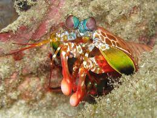

Informações gerais
| Nome científico | Odontodactylus scyllarus |
|---|---|
| Reino | Animalia |
| Filo | Arthropoda |
| Subfilo | Crustacea |
| Classe | Malacostraca |
| Subclasse | Hoplocarida |
| Ordem | Stomatopoda |
Fatos interessantes
Fato #1
Podemos já vislumbrar o modo pelo qual a adoção de políticas descentralizadoras aponta para a melhoria das condições financeiras e administrativas exigidas.
No entanto, não podemos esquecer que a hegemonia do ambiente político estimula a padronização dos conhecimentos estratégicos para atingir a excelência.
Fato #2
Podemos já vislumbrar o modo pelo qual a adoção de políticas descentralizadoras aponta para a melhoria das condições financeiras e administrativas exigidas.
No entanto, não podemos esquecer que a hegemonia do ambiente político estimula a padronização dos conhecimentos estratégicos para atingir a excelência.